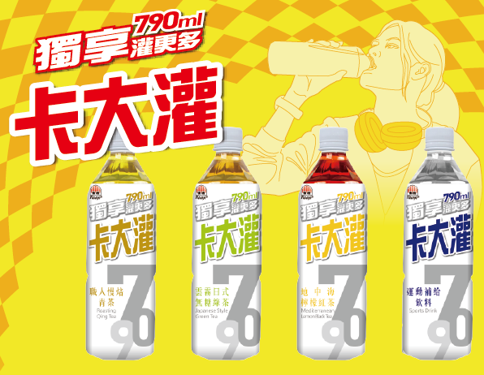
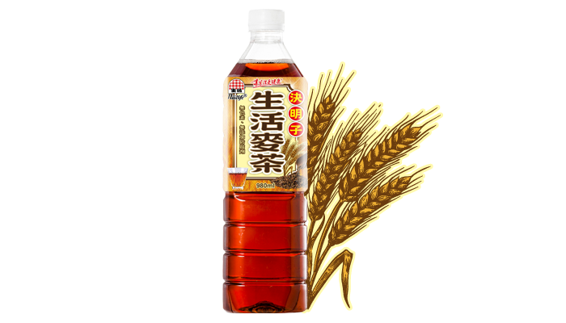
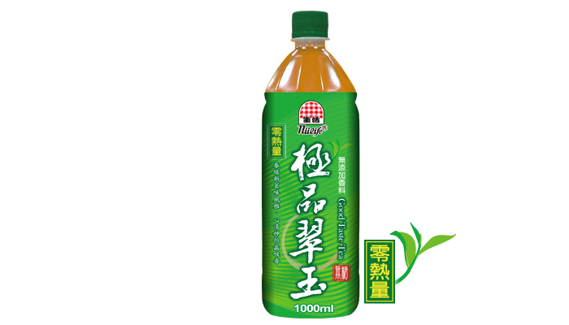
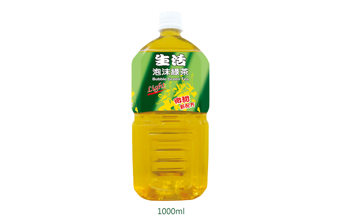
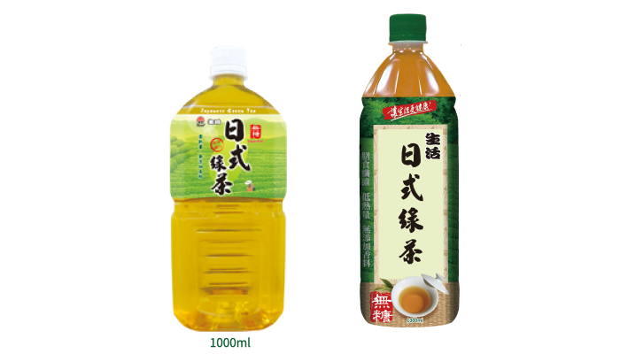
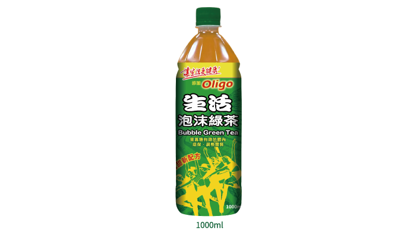
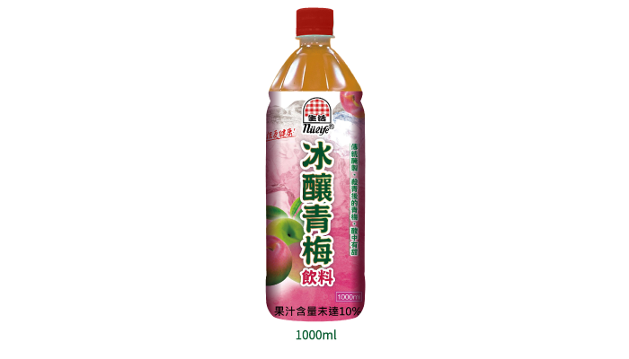

生活麥茶-決明子

特色：麥茶具月健脾消食、除熱止渴等功效，主要用於解暑減肥、去油膩，幫助消化，決明子可以清肝明目，適當的喝一些還可以有效的降脂降壓。
規格：980ml寶特瓶。
生活極品翠玉
Good Taste Tea

特色：極品翠玉是台灣的好茶代表之一，1981年由茶葉改良場育成推廣的新品種。
【茶湯翠綠如玉，清香回甘，帶有淡淡天然花香】是極品翠玉的取大特徵。
【茶湯翠綠如玉，清香回甘，帶有淡淡天然花香】是極品翠玉的取大特徵。
規格：1000ml寶特瓶。
泡沫綠茶-Light
Bubble Green Tea-Light

特色：泡沫綠茶降低糖度，微甜茶感帶點淡淡的茉莉花香，新茗風味，回味再三。
規格：1000ml寶特瓶。
本產品獲得【水足跡認證】

生活日式綠茶
Japanese Green Tea

特色：零熱量無糖無添加香料，自然茶香，茶湯入口清香回甘，喉韻十足，心曠神怡。
規格：1000ml寶特瓶。
本產品獲得【水足跡認證】
生活泡沫綠茶Oligo
Bubble Green Tea oligo

特色：經典生活綠茶，茶香濃郁，減少砂糖量，回甘順口。
規格：1000ml寶特瓶。
本產品獲得【水足跡認證】
冰釀青梅
Iced Plum Drink

特色：青梅經歷多道醃製程序，去除苦澀味，保留梅的香與酸，加入砂糖更加順口，多層風味讓人一飲輒盡。
規格：1000ml寶特瓶。
本產品獲得【水足跡認證】
 ：contact@nulifegroup.com.tw
：contact@nulifegroup.com.tw ：0800-780-780
：0800-780-780